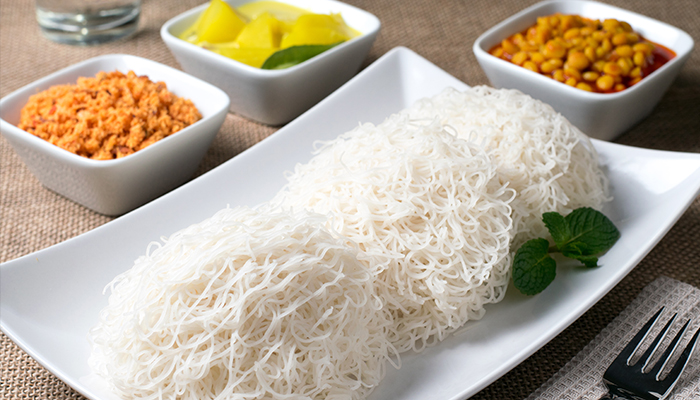

String Hoppers

Ingredients
Ingredient 1 - Flour
Ingredient 2 - water
Cooking Instructions
Step 1: Mix flour with water
Step 2: Using a specific tools take tiny sheets from the mix.
Step 3: Steam it for 15 mins.
Step 3: Enjoy